Справочник по системному программированию · модуль 1 · рабочее место
1.1
C для системного
программиста
В главе собирается первая функция ядра агента — core_get_info. Она заполняет структуру сведениями о компьютере: номер процесса, число процессоров, размер страницы памяти и имя компьютера. До неё на четырёх маленьких программах разобрано, без чего не читается системный интерфейс: размеры типов, структура, которую система заполняет по адресу, строка в буфере и код ошибки. Каждый шаг — программа, сборка и кадр результата для системы, выбранной переключателем вверху страницы.
- Категория
- Язык C
- Уровень
- Начальный
- Что получится
core.h,core_info.cиshow_info.cвagent/core- Сколько занимает
- Пара 2, около пятидесяти минут за компьютером
§1Задача главы
В модуле 0 программа hello.c вызывала одну системную функцию, которая возвращает число, — номер процесса. Большинство функций системного интерфейса устроены сложнее. Они принимают адрес памяти и записывают туда результат: структуру с десятком полей, строку с именем или путь к файлу. Об ошибке они сообщают числом, а причину кладут отдельно. Для вызова таких функций нужны четыре темы языка C. Первая — сколько байт занимает каждый тип. Вторая — как функция заполняет структуру по указателю. Третья — как устроена строка в буфере. Четвёртая — где искать код ошибки.
В главе эти четыре темы разобраны на маленьких программах, и из них собирается первая функция ядра агента — core_get_info. Она заполняет структуру struct core_info четырьмя сведениями о компьютере: номер процесса агента, число процессоров, размер страницы памяти и имя компьютера. В главе 1.2 эта функция войдёт в библиотеку ядра, и мозг агента на Python будет вызывать её через ctypes.
Что делает функция ядра
Программа выделяет пустую структуру и передаёт функции её адрес. Функция вызывает системные функции и записывает ответы в поля. Сама функция возвращает только число: 0 — всё получилось, другое число — код ошибки системы.
Такой порядок — адрес пустой структуры на входе и код ошибки на выходе — повторяет сам системный интерфейс. Функция WinAPI GetNativeSystemInfo заполняет структуру SYSTEM_INFO по адресу, GetComputerNameW пишет имя в переданный буфер.Функция POSIX uname заполняет структуру struct utsname по адресу, gethostname пишет имя в переданный буфер. Ядро агента пишется в том же стиле, поэтому его функции читаются так же, как документация системы.
Зачем это нужно в работе
- Читать документацию системы. Описание каждой функции WinAPI и POSIX дано объявлением на C: типы параметров, указатели, размер буфера, значение при ошибке. Без этих четырёх тем объявление не читается.
- Передавать данные между языками. Мозг агента на Python читает структуру ядра через
ctypes. Для этого он должен знать размер и порядок каждого поля, а размеры у части типов C зависят от системы. - Не выходить за границы буфера. Запись или чтение за концом буфера — частая причина падений и уязвимостей системных программ. Авария CrowdStrike из главы 0.2 началась с чтения за границей массива.
- Сообщать причину сбоя. Агент работает без человека. По коду ошибки в журнале видно, что произошло: файла нет, доступ запрещён или буфер мал.
Все программы главы лежат в отдельной папке pair02: C:\syspro\pair02~/syspro/pair02, рядом с папкой pair01 из лабораторной работы 1. Файлы ядра в конце главы переносятся в репозиторий sysprog-start, в папку agent/core. Программы собираются компилятором MSVC в окне x64 Native Tools Command Prompt for VS 2022, как в ЛР 1. Код набирается в VS Code.Программы набираются в VS Code и собираются компилятором clang во встроенном терминале VS Code (Terminal → New Terminal).Программы набираются в VS Code и собираются компилятором gcc во встроенном терминале VS Code (Terminal → New Terminal).
Кадры сделаны для системы, выбранной переключателем вверху страницы. Красные рамки отмечают места, о которых идёт речь в тексте; номер рамки повторяется в тексте в красном квадрате, например 1. Номера процессов, имя компьютера и число процессоров у вас будут другими.
Первая тема — размеры типов: от них зависит, как читать любую структуру системы.
§2Шаг 1. Измерить типы
Размер одежды «L» у разных производителей разный: у одного это 50-й российский размер, у другого 52-й. Если заказывать вещь по букве, можно ошибиться. Сантиметры у всех одинаковые, поэтому точный заказ делают по обхвату в сантиметрах.
Одежду можно примерить и вернуть. Программа с неверным размером типа собирается без ошибок и при запуске читает чужие байты.
Каждая переменная в C занимает в памяти определённое число байт, и это число задаёт её тип. Стандарт языка C задаёт для части типов только нижнюю границу: int — не меньше 2 байт, long — не меньше 4. Точный размер выбирают создатели компилятора и системы. Структуру, заполненную системой, читают байт за байтом. Поэтому размер каждого поля в программе должен совпадать с тем, что записала система.
Размер типа в байтах возвращает оператор sizeof. Создаём в VS Code папку pair02, в ней файл sizes.c и вставляем код:
#include <windows.h> #include <stdio.h> #include <stdint.h> int main(void) { printf("char %zu\n", sizeof(char)); printf("int %zu\n", sizeof(int)); printf("long %zu\n", sizeof(long)); printf("void * %zu\n", sizeof(void *)); printf("int64_t %zu\n", sizeof(int64_t)); printf("DWORD %zu\n", sizeof(DWORD)); printf("WCHAR %zu\n", sizeof(WCHAR)); printf("HANDLE %zu\n", sizeof(HANDLE)); return 0; }
#include <stdio.h> #include <stdint.h> #include <sys/types.h> int main(void) { printf("char %zu\n", sizeof(char)); printf("int %zu\n", sizeof(int)); printf("long %zu\n", sizeof(long)); printf("void * %zu\n", sizeof(void *)); printf("int64_t %zu\n", sizeof(int64_t)); printf("pid_t %zu\n", sizeof(pid_t)); return 0; }
Формат %zu в printf печатает значение типа size_t — его возвращает sizeof. Кроме общих типов C, программа измеряет три типа Windows из windows.h. DWORD — число, которое возвращает GetCurrentProcessId. WCHAR — одна буква строки Windows. HANDLE — дескриптор объекта ядра из ЛР 1.Тип pid_t из sys/types.h — тот, что возвращает getpid. Собираем и запускаем:
cl /nologo /W4 sizes.c && sizes.exe
clang -Wall -Wextra -o sizes sizes.c && ./sizes
gcc -Wall -Wextra -o sizes sizes.c && ./sizes
Ключи /W4-Wall -Wextra включают предупреждения компилятора. Они понадобятся в шаге 8; включать их стоит с первой программы.
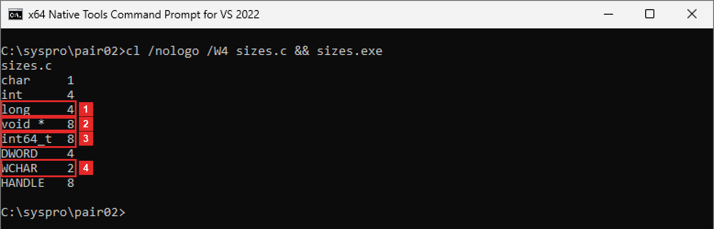
sizes.exe в командной строке MSVC. 1 long — 4 байта, 2 адрес — 8 байт, 3 int64_t — 8 байт, 4 WCHAR — 2 байта.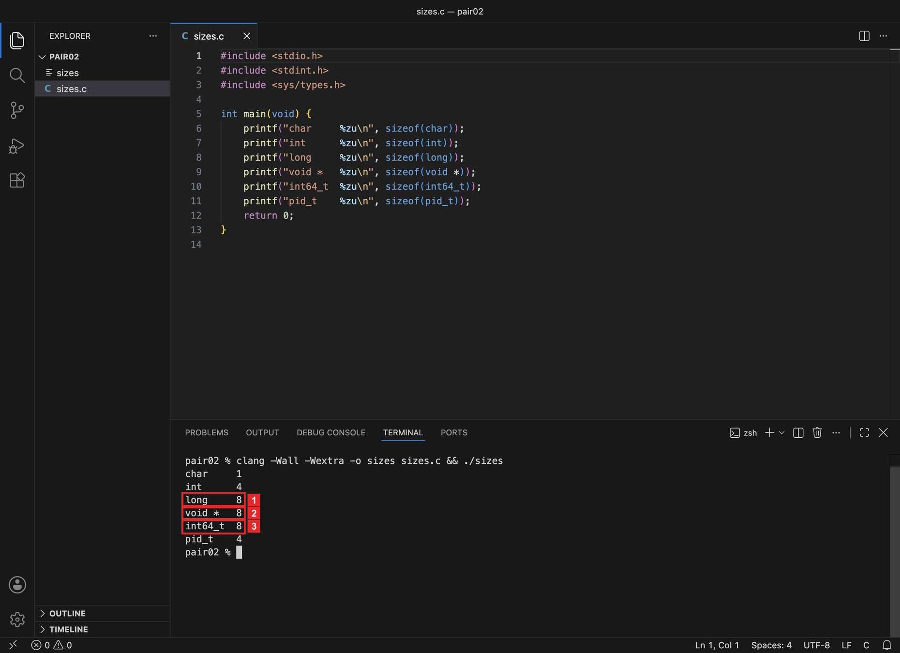
sizes.c, внизу терминал. 1 long — 8 байт, 2 адрес — 8 байт, 3 int64_t — 8 байт.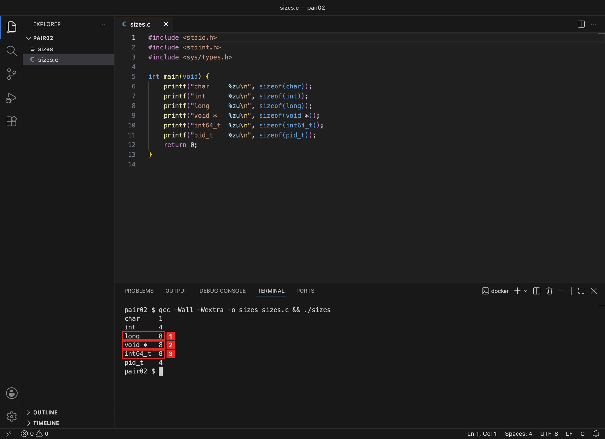
sizes.c, внизу терминал с gcc. 1 long — 8 байт, 2 адрес — 8 байт, 3 int64_t — 8 байт.Первая строка после команды — sizes.c: так компилятор MSVC сообщает, какой файл он собрал. Ниже — вывод программы. Строка 1 отличается от macOS и Linux: в 64-битной Windows long занимает 4 байта. Адрес 2 занимает 8 байт: программа собрана для x64, а у 64-битного процессора адрес — 64 бита. Буква строки Windows 4 занимает 2 байта.
Программа вывела шесть строк, по одной на тип. Строка 1 отличается от Windows: в 64-битных macOS и Linux long занимает 8 байт, в 64-битной Windows — 4. Адрес 2 занимает 8 байт: у 64-битного процессора адрес — 64 бита. Тип 3 одинаков на всех системах.
Ниже — те же числа для трёх систем рядом. Расхождение одно, в строке long.
| Тип | Windows | macOS | Linux | Что в нём хранят |
|---|---|---|---|---|
char | 1 | 1 | 1 | один байт: букву ASCII или часть буквы UTF-8 |
int | 4 | 4 | 4 | целое число, код возврата |
long | 4 | 8 | 8 | целое число; размер зависит от системы |
void * | 8 | 8 | 8 | адрес в памяти |
int64_t | 8 | 8 | 8 | целое число ровно в 8 байт |
DWORD / pid_t | 4 | 4 | 4 | номер процесса и другие числа системы |
WCHAR | 2 | — | — | одна буква строки Windows в кодировке UTF-16 |
Расхождение в long записано в соглашениях о моделях данных. Windows использует модель LLP64: в 8 байт расширены только long long и указатель. macOS и Linux используют модель LP64: в 8 байт расширены long и указатель. Поэтому в структурах, которые передаются между системами или языками, пишут типы точного размера из stdint.h: int32_t — ровно 4 байта, int64_t — ровно 8. Так в ядре агента и будет сделано.
Что получилось.Размер типа виден оператором sizeof. Типы char, int, адрес и int64_t на трёх системах совпадают, long — нет. Дальше — структура, которую заполняет система.
§3Шаг 2. Получить структуру от системы
В МФЦ посетитель берёт пустой бланк, кладёт его в лоток окошка, и сотрудник вписывает в поля данные из базы. Посетитель не говорит сотруднику, что писать, — он только даёт бланк нужной формы. Возвращается тот же лист, но уже заполненный.
Бланк из лотка забирают и потом возвращают. В C функция получает только адрес бланка и пишет прямо в память вызывающей программы, копия не создаётся.
Структура (struct) — несколько переменных разных типов под одним именем, которые лежат в памяти подряд. Каждая переменная внутри структуры называется полем, к полю обращаются через точку: u.sysname. Системные функции, которые возвращают больше одного числа, обычно заполняют структуру.
Через return функция возвращает одно значение, и системные функции отдают так код успеха или ошибки. Поэтому сведения передаются иначе: вызывающая программа сама объявляет пустую структуру и передаёт функции её адрес. Указатель — переменная, в которой хранится адрес в памяти. Оператор & берёт адрес переменной, а запись struct utsname * в объявлении функции означает «адрес структуры utsname». Функция пишет поля по этому адресу, и после возврата они видны в переменной вызывающей программы.
В Windows так устроена функция GetNativeSystemInfo: она заполняет структуру SYSTEM_INFO — число процессоров, размер страницы памяти, архитектуру процессора. Файл sysname.c:
В POSIX так устроена функция uname: она заполняет структуру struct utsname — имя системы, версию ядра, тип процессора и имя компьютера. Файл sysname.c:
#include <windows.h> #include <stdio.h> int main(void) { SYSTEM_INFO si; GetNativeSystemInfo(&si); printf("processors %lu\n", si.dwNumberOfProcessors); printf("page size %lu\n", si.dwPageSize); printf("architecture %u\n", si.wProcessorArchitecture); printf("sizeof %zu\n", sizeof si); return 0; }
#include <stdio.h> #include <sys/utsname.h> int main(void) { struct utsname u; if (uname(&u) != 0) { perror("uname"); return 1; } printf("sysname %s\n", u.sysname); printf("release %s\n", u.release); printf("machine %s\n", u.machine); printf("nodename %s\n", u.nodename); printf("sizeof %zu\n", sizeof u); return 0; }
Объявление SYSTEM_INFO si; выделяет память под структуру, но поля в ней пока не заданы. Вызов GetNativeSystemInfo(&si) передаёт адрес si, и функция заполняет поля. Функция ничего не возвращает: получить сведения о процессоре она может всегда.
Объявление struct utsname u; выделяет память под структуру, но поля в ней пока не заданы. Вызов uname(&u) передаёт адрес u, и функция заполняет поля. При успехе она возвращает 0, при ошибке −1 — поэтому вызов стоит внутри if, а функция perror печатает причину ошибки.
cl /nologo /W4 sysname.c && sysname.exe
clang -Wall -Wextra -o sysname sysname.c && ./sysname
gcc -Wall -Wextra -o sysname sysname.c && ./sysname
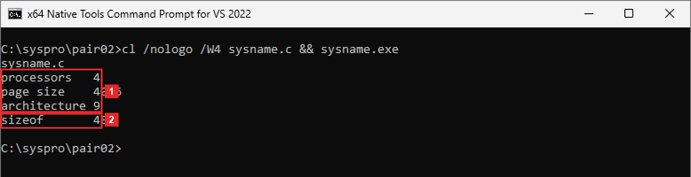
SYSTEM_INFO после вызова: 4 процессора, страница 4096 байт, архитектура 9. 2 Вся структура занимает 48 байт.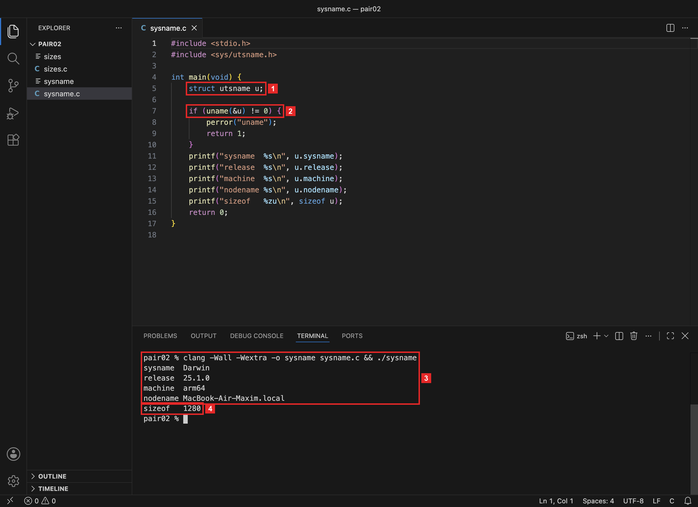
uname с адресом &u. 3 Поля после вызова: Darwin, версия ядра 25.1.0, процессор arm64, имя компьютера. 4 Структура занимает 1280 байт.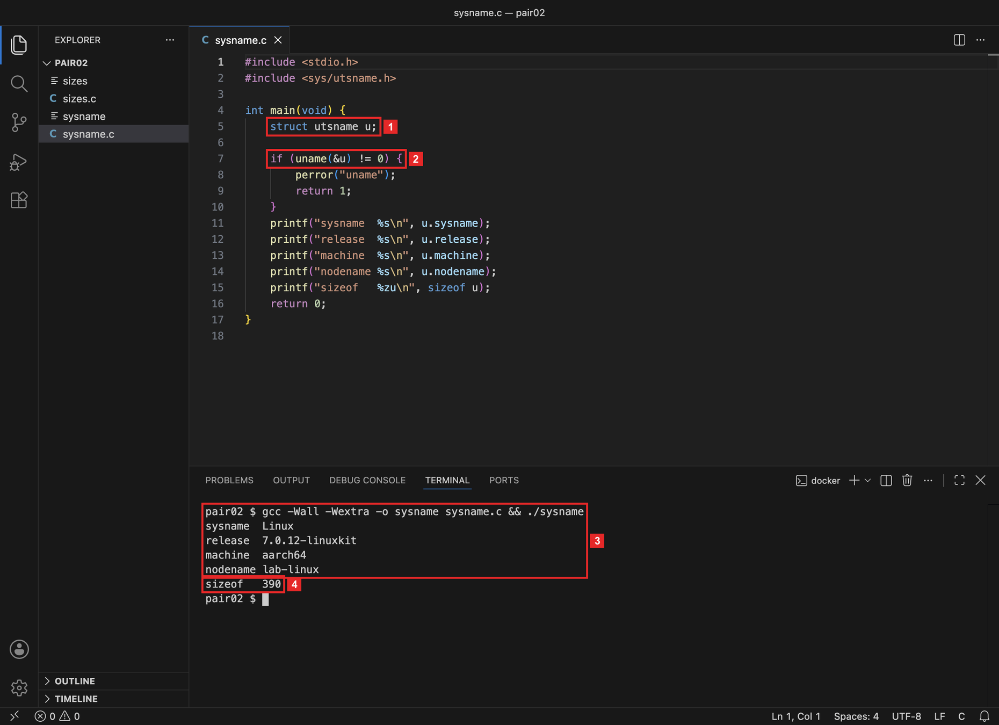
uname с адресом &u. 3 Поля после вызова: Linux, версия ядра, процессор aarch64, имя lab-linux. 4 Структура занимает 390 байт.Поле dwPageSize 1 — размер страницы памяти: участков, которыми система выделяет память процессам. Архитектура 9 — значение PROCESSOR_ARCHITECTURE_AMD64, то есть x64. Кадры сняты на компьютере с процессором ARM, а программа собрана для x64. Она выполняется через эмулятор, как в ЛР 1, и функция сообщает ей архитектуру x64. Программа, собранная для ARM64, получила бы 12. На компьютере с Intel или AMD будет 9.
Поля 3 — строки: имя ядра, его версия, тип процессора и имя компьютера в сети. Размер 4 показывает, как система хранит строки в этой структуре: пять полей по 256 байт. Длина каждой строки меньше 256, остаток поля не используется.
Поля 3 — строки: имя ядра, его версия, тип процессора и имя компьютера в сети. Размер 4 — 390 байт: в Linux шесть полей по 65 байт, шестое — имя домена. У той же структуры в macOS другой размер, поэтому код, который копирует её байты, на другой системе прочитает не те поля.
Вызов по адресу
Функция получает только адрес. Память под структуру выделила вызывающая программа, и ответ остаётся у неё.
Что получилось.Структура объявляется в вызывающей программе, системная функция получает её адрес и заполняет поля. Размер одной и той же структуры на разных системах разный. Часть полей — строки, и о них следующий шаг.
§4Шаг 3. Прочитать строку из буфера
Ряд ячеек камеры хранения пронумерован подряд. В каждой ячейке одна буква. Где кончается слово, по ряду не видно, поэтому после последней буквы кладут пустую карточку с нулём. Кто читает слово, идёт по ячейкам, пока не встретит ноль.
Ряд камеры хранения заканчивается стеной. Ряд байтов в памяти продолжается дальше, и если нуля нет, чтение идёт в чужие данные.
Строка в C — последовательность байтов, после которой стоит байт со значением 0. Его записывают как '\0' и называют завершающим нулём. Длину строка не хранит: функция strlen считает байты до нуля, printf с форматом %s печатает до нуля. Память под строку — буфер — выделяет вызывающая программа, например массивом char host[256], и передаёт функции его адрес и размер.
В Windows у строк два вида. Функции с окончанием A работают с однобайтовой кодировкой, функции с окончанием W — с UTF-16, где буква занимает 2 байта (тип WCHAR). Внутри Windows строки хранятся в UTF-16, поэтому в курсе используются функции W. Ядро агента отдаёт строки в UTF-8, как macOS и Linux, и переводит их функцией WideCharToMultiByte.
Программа hostbuf.c получает имя компьютера функцией GetComputerNameW, печатает байты строки в UTF-16 и в UTF-8, а затем просит имя в буфер на 4 буквы:
Программа hostbuf.c получает имя компьютера функцией gethostname в буфер на 256 байт и печатает байты строки в шестнадцатеричном виде функцией dump. Затем она просит то же имя в буфер на 4 байта tiny. Перед вызовом memset заполняет tiny буквами X, чтобы было видно, какие байты записала функция.
#include <windows.h> #include <stdio.h> #include <string.h> static void dump(const void *p, size_t n) { const unsigned char *b = p; for (size_t i = 0; i < n; i++) printf("%02x ", b[i]); printf("\n"); } int main(void) { WCHAR name[MAX_COMPUTERNAME_LENGTH + 1]; DWORD len = MAX_COMPUTERNAME_LENGTH + 1; char utf8[64]; WCHAR tiny[4]; DWORD tiny_len = 4; GetComputerNameW(name, &len); printf("WCHAR: %lu characters\n", len); dump(name, (len + 1) * sizeof(WCHAR)); WideCharToMultiByte(CP_UTF8, 0, name, -1, utf8, sizeof utf8, NULL, NULL); printf("UTF-8: \"%s\", length %zu\n", utf8, strlen(utf8)); dump(utf8, strlen(utf8) + 1); if (!GetComputerNameW(tiny, &tiny_len)) printf("tiny: error %lu, needed %lu\n", GetLastError(), tiny_len); return 0; }
#include <errno.h> #include <stdio.h> #include <string.h> #include <unistd.h> static void dump(const char *buf, size_t n) { for (size_t i = 0; i < n; i++) printf("%02x ", (unsigned char)buf[i]); printf("\n"); } int main(void) { char host[256]; char tiny[4]; gethostname(host, sizeof host); printf("host \"%s\", length %zu\n", host, strlen(host)); dump(host, strlen(host) + 1); memset(tiny, 'X', sizeof tiny); int rc = gethostname(tiny, sizeof tiny); printf("tiny rc=%d errno=%d (%s)\n", rc, rc ? errno : 0, rc ? strerror(errno) : "-"); dump(tiny, sizeof tiny); return 0; }
cl /nologo /W4 hostbuf.c && hostbuf.exe
clang -Wall -Wextra -o hostbuf hostbuf.c && ./hostbuf
gcc -Wall -Wextra -o hostbuf hostbuf.c && ./hostbuf
Буфер в программе называется tiny. С именем small MSVC выдал ошибки C2628 и C2143. В заголовках, которые подключает windows.h, есть макрос #define small char, и компилятор видел строку WCHAR char[4]. Если компилятор сообщает о синтаксической ошибке в строке, где ошибки нет, причиной бывает макрос из заголовка.
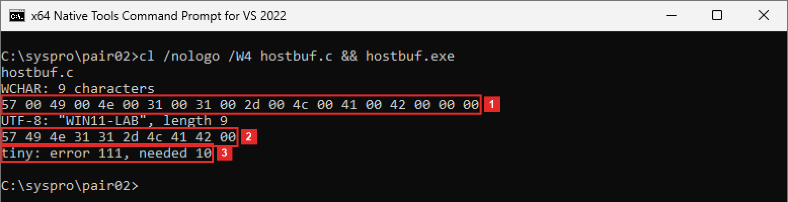
WIN11-LAB в UTF-16: после каждой буквы байт 00, в конце два нулевых байта. 2 То же имя в UTF-8: 9 байт и 00. 3 Буфер на 4 буквы: ошибка 111, нужно 10.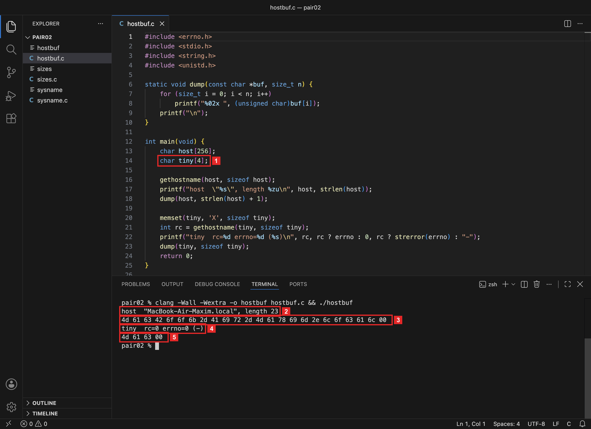
00. 4 Вызов с буфером tiny вернул 0. 5 В буфере три буквы Mac и 00.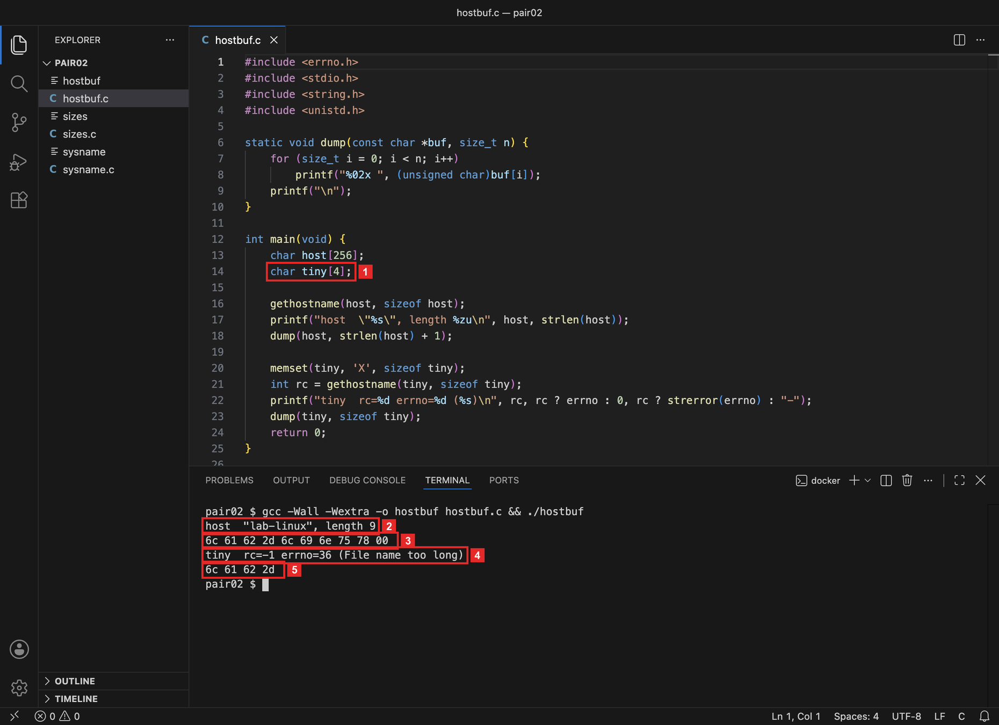
00. 4 Вызов с буфером tiny вернул −1, errno 36. 5 В буфере четыре буквы lab-, нуля нет.Первая часть вывода показывает, как строка лежит в памяти. На полосе ниже — те же байты по одному: сверху буква, снизу её код. Зелёная ячейка — завершающий ноль.
В UTF-16 1 у латинской буквы второй байт нулевой (на полосе — пунктирные ячейки), а конец строки отмечен двумя нулевыми байтами — нулевой буквой WCHAR. Функция вернула длину 9 букв, без нуля. После перевода в UTF-8 2 буква занимает один байт, и строка выглядит так же, как в macOS и Linux.
Длина 2 — 23, а байтов 3 — 24: последний байт 00 не входит в длину, но место в буфере занимает. Поэтому буфер всегда должен быть хотя бы на один байт больше самой длинной строки.
Длина 2 — 9, а байтов 3 — 10: последний байт 00 не входит в длину, но место в буфере занимает. Поэтому буфер всегда должен быть хотя бы на один байт больше самой длинной строки.
Вторая часть — буфер, в который имя не помещается. Здесь три системы ведут себя по-разному.
Функция GetComputerNameW 3 вернула FALSE, код ошибки 111 и записала в переменную длины нужный размер — 10 букв: девять букв имени и ноль. Второй параметр функции — адрес переменной tiny_len: функция читает из неё размер буфера и пишет туда ответ. Программа может выделить буфер на 10 букв и вызвать функцию снова.
macOS обрезала имя до трёх букв и поставила ноль 5, а функция вернула 0 4 — успех. Программа получила строку Mac и не узнала, что имя длиннее. Стандарт POSIX разрешает такое поведение: при обрезке функция может не сообщать об ошибке и не ставить ноль в конце.
Linux вернул −1 и errno 36 4, «File name too long». В буфер записаны четыре байта lab- 5 и нуля нет (красная ячейка). Если программа не проверит код возврата и напечатает tiny как строку, printf прочитает байты за концом буфера и выведет их до первого нулевого байта в памяти.
Из шага следуют два правила для ядра агента. Размер буфера передаётся функции вместе с адресом выражением sizeof host: если размер буфера изменят, вызов останется верным. Последний байт буфера после вызова принудительно делается нулём — так строка останется строкой, даже если система её обрезала.
Что получилось.Строка в C — байты до нуля, длина не хранится. Буфер выделяет вызывающая программа, функция получает его адрес и размер. При маленьком буфере результат зависит от системы, и узнать о проблеме можно только по коду возврата. Следующий шаг — как этот код читать.
§5Шаг 4. Получить код ошибки
На табло аэропорта у рейса стоит «Отменён». Причина — погода, техника или нехватка экипажа — записана в отдельной сводке у справочной. Табло отвечает только «да или нет», за причиной идут в сводку, и сделать это нужно сразу: следующая отмена её перепишет.
Сводка в аэропорту хранит все отмены за день. Место для кода ошибки одно на поток программы, и следующий неудачный вызов записывает туда свой код.
Системные функции сообщают об ошибке в два этапа. Сначала возвращаемое значение показывает, что вызов не удался: FALSE или INVALID_HANDLE_VALUE-1. Затем номер причины берут из отдельного места: функция GetLastError возвращает код последней ошибки текущего потокапеременная errno из errno.h хранит код последней ошибки текущего потока. Код читают сразу после неудачного вызова, потому что любой следующий системный вызов, даже printf, может его перезаписать.
Программа errors.c открывает три файла функцией CreateFileW: обычный win.ini, несуществующий файл и SAM — базу учётных записей Windows, которую система держит закрытой. При неудаче программа сразу сохраняет GetLastError() в переменную code.
Программа errors.c открывает три файла функцией open: /etc/hosts, который может читать любой пользователь, несуществующий файл и /etc/sudoers — настройки команды sudo, которые читает только администратор. При неудаче программа сразу сохраняет errno в переменную code, а функция strerror переводит код в текст.
Программа errors.c открывает три файла функцией open: /etc/hosts, который может читать любой пользователь, несуществующий файл и /etc/shadow — хэши паролей, которые читает только администратор. При неудаче программа сразу сохраняет errno в переменную code, а функция strerror переводит код в текст.
#include <windows.h> #include <stdio.h> static void try_open(const WCHAR *path) { HANDLE h = CreateFileW(path, GENERIC_READ, FILE_SHARE_READ, NULL, OPEN_EXISTING, FILE_ATTRIBUTE_NORMAL, NULL); if (h == INVALID_HANDLE_VALUE) { DWORD code = GetLastError(); printf("%-40ls error %lu\n", path, code); return; } printf("%-40ls handle %p\n", path, (void *)h); CloseHandle(h); } int main(void) { try_open(L"C:\\Windows\\win.ini"); try_open(L"C:\\Windows\\no-such-file.ini"); try_open(L"C:\\Windows\\System32\\config\\SAM"); return 0; }
#include <errno.h> #include <fcntl.h> #include <stdio.h> #include <string.h> #include <unistd.h> static void try_open(const char *path) { int fd = open(path, O_RDONLY); if (fd == -1) { int code = errno; printf("%-22s fd=-1 errno=%d %s\n", path, code, strerror(code)); return; } printf("%-22s fd=%d\n", path, fd); close(fd); } int main(void) { try_open("/etc/hosts"); try_open("/etc/no-such-file"); try_open("/etc/sudoers"); return 0; }
#include <errno.h> #include <fcntl.h> #include <stdio.h> #include <string.h> #include <unistd.h> static void try_open(const char *path) { int fd = open(path, O_RDONLY); if (fd == -1) { int code = errno; printf("%-22s fd=-1 errno=%d %s\n", path, code, strerror(code)); return; } printf("%-22s fd=%d\n", path, fd); close(fd); } int main(void) { try_open("/etc/hosts"); try_open("/etc/no-such-file"); try_open("/etc/shadow"); return 0; }
cl /nologo /W4 errors.c && errors.exe
clang -Wall -Wextra -o errors errors.c && ./errors
gcc -Wall -Wextra -o errors errors.c && ./errors
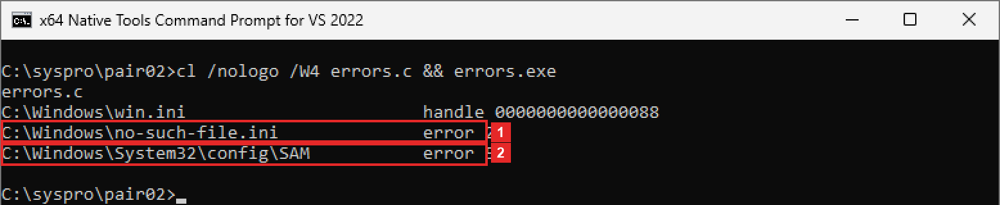
win.ini открыт, получен дескриптор. 1 Несуществующий файл — ошибка 2. 2 SAM — ошибка 5.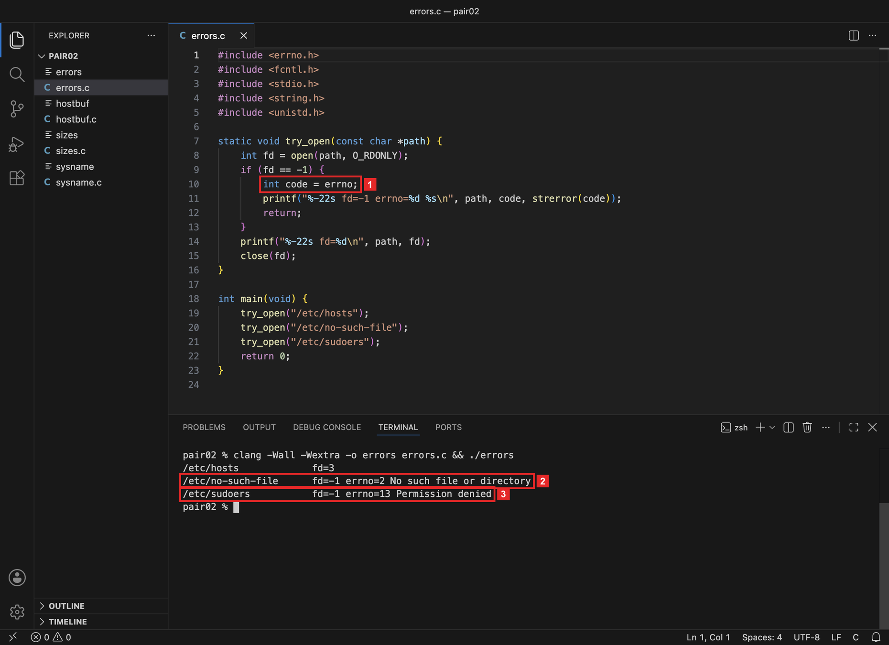
open. /etc/hosts открыт: дескриптор 3. 2 Несуществующий файл — errno 2. 3 /etc/sudoers — errno 13.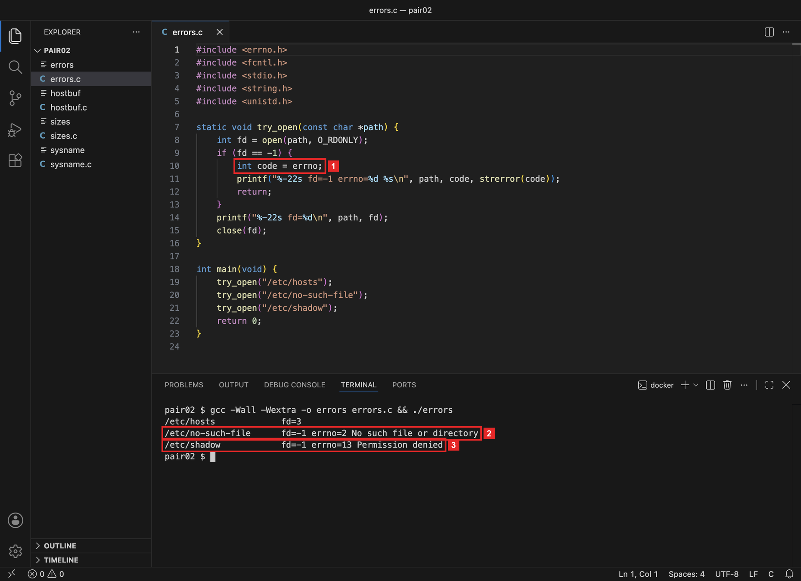
open. /etc/hosts открыт: дескриптор 3. 2 Несуществующий файл — errno 2. 3 /etc/shadow — errno 13.Ошибка 2 1 — ERROR_FILE_NOT_FOUND, файла нет. Ошибка 5 2 — ERROR_ACCESS_DENIED, доступ запрещён. Текст ошибки по номеру печатает команда net helpmsg. Для кода 2 она выводит «Не удается найти указанный файл.», для 5 — «Отказано в доступе.». Для кода 111 из шага 3 текст — «Указано слишком длинное имя файла.». Из программы текст получают функцией FormatMessageW.
Код 2 2 называется ENOENT, «No such file or directory». Код 13 3 — EACCES, «Permission denied»: файл есть, но читать его этому пользователю нельзя. Имена кодов объявлены в errno.h, и в коде сравнивают с ними: if (code == ENOENT).
Таблицы кодов у Windows и POSIX разные. Номер 2 у них совпал, а отказ в доступе — 5 в Windows и 13 в macOS и Linux. Поэтому код ошибки читают вместе с названием системы, на которой он получен.
| Причина | Windows, GetLastError | macOS и Linux, errno |
|---|---|---|
| Файла нет | 2 ERROR_FILE_NOT_FOUND | 2 ENOENT |
| Доступ запрещён | 5 ERROR_ACCESS_DENIED | 13 EACCES |
| Буфер или имя слишком длинные | 111 ERROR_BUFFER_OVERFLOW | 36 ENAMETOOLONG в Linux, 63 в macOS |
| Неверный параметр | 87 ERROR_INVALID_PARAMETER | 22 EINVAL |
Что получилось.Неудачу показывает возвращаемое значение, причину — GetLastErrorerrno, и её читают сразу после вызова. Теперь известно всё, что нужно для функции ядра: типы точного размера, структура по адресу, строка в буфере и код ошибки.
§6Шаг 5. Описать свою структуру
Функции ядра понадобятся и программе на C, и мозгу агента на Python. Поэтому объявление структуры и функции выносится в отдельный заголовочный файл core.h. Другие файлы подключают его строкой #include "core.h" — кавычки вместо угловых скобок означают, что файл ищется сначала в папке рядом с исходником. Строки #ifndef CORE_H, #define CORE_H и #endif не дают подключить файл дважды. Файл одинаков для трёх систем:
#ifndef CORE_H #define CORE_H #include <stdint.h> #define CORE_HOST_MAX 256 struct core_info { int64_t pid; int32_t cpus; int32_t page_size; char host[CORE_HOST_MAX]; }; int core_get_info(struct core_info *out); #endif
Поля выбраны по шагам 1–4. Номер процесса и два числа объявлены типами точного размера, поэтому структура занимает одинаково байт на всех системах. Имя компьютера хранится в буфере на 256 байт: CORE_HOST_MAX задан через #define, и размер меняется в одном месте. Последняя строка — объявление функции: её имя, тип результата и параметр — адрес структуры. Сама функция будет в следующем файле.
Порядок полей подобран так, чтобы между ними не было пропусков. Компилятор выравнивает поля: 8-байтовое число он ставит на адрес, кратный 8. Два поля по 4 байта сразу после pid заполняют следующие 8 байт, и структура занимает 8 + 4 + 4 + 256 = 272 байта без пустых мест:
Под полосой — смещение каждого поля: номер его первого байта от начала структуры. Программа на другом языке находит поле по смещению, поэтому раскладка не должна зависеть от системы.
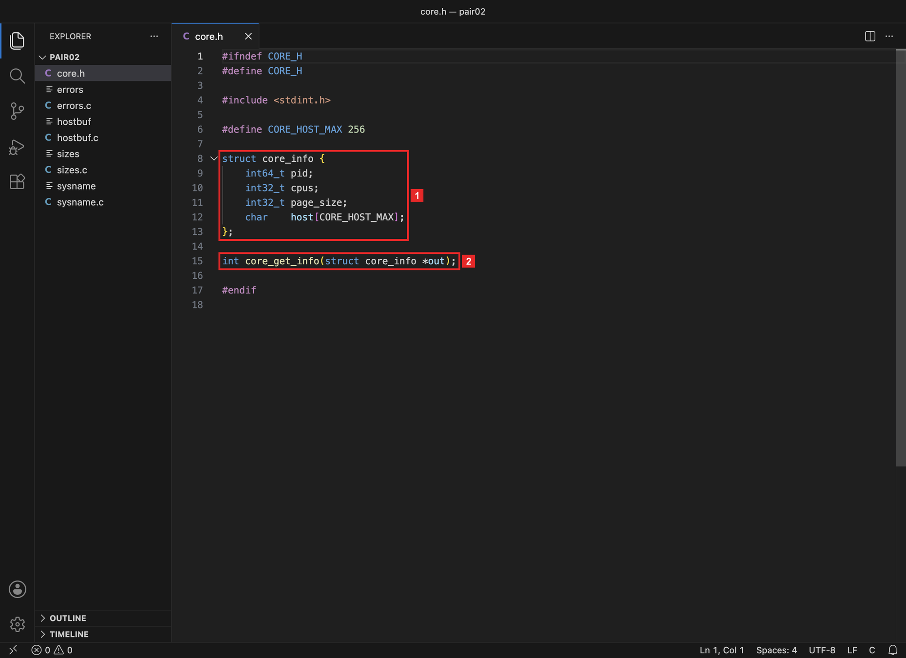
core.h в VS Code. 1 Структура core_info из четырёх полей. 2 Объявление функции ядра.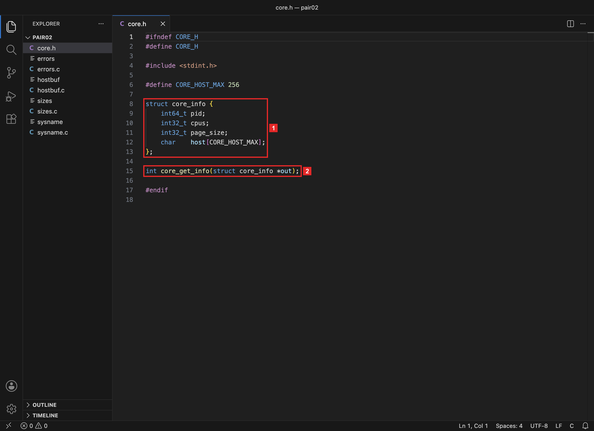
core.h в VS Code. 1 Структура core_info из четырёх полей. 2 Объявление функции ядра.Что получилось.В core.h описано, что функция ядра отдаёт и как её вызвать. Структура занимает 272 байта на всех системах. Дальше — сама функция.
§7Шаг 6. Написать функцию ядра
Функция core_get_info собирает приёмы шагов 1–4. Она получает адрес структуры, вызывает системные функции и записывает их ответы в поля. Результат функции — код ошибки: 0, если всё получилось, иначе код системы. Файл core_info.c:
#include <windows.h> #include "core.h" int core_get_info(struct core_info *out) { SYSTEM_INFO si; WCHAR name[MAX_COMPUTERNAME_LENGTH + 1]; DWORD len = MAX_COMPUTERNAME_LENGTH + 1; if (out == NULL) return ERROR_INVALID_PARAMETER; ZeroMemory(out, sizeof *out); out->pid = GetCurrentProcessId(); GetNativeSystemInfo(&si); out->cpus = (int32_t)si.dwNumberOfProcessors; out->page_size = (int32_t)si.dwPageSize; if (!GetComputerNameW(name, &len)) return (int)GetLastError(); if (WideCharToMultiByte(CP_UTF8, 0, name, -1, out->host, sizeof out->host, NULL, NULL) == 0) return (int)GetLastError(); return 0; }
#include <errno.h> #include <string.h> #include <unistd.h> #include "core.h" int core_get_info(struct core_info *out) { if (out == NULL) return EINVAL; memset(out, 0, sizeof *out); out->pid = getpid(); out->cpus = (int32_t)sysconf(_SC_NPROCESSORS_ONLN); out->page_size = (int32_t)sysconf(_SC_PAGESIZE); if (gethostname(out->host, sizeof out->host) != 0) return errno; out->host[sizeof out->host - 1] = '\0'; return 0; }
Разбор по строкам.
if (out == NULL)— проверка адреса.NULL— нулевой указатель, «адреса нет». Если вызвать функцию с ним и писать вout->pid, программа упадёт. Функция возвращает кодERROR_INVALID_PARAMETER(87)EINVAL(22) — «неверный параметр».ZeroMemorymemset(out, 0, sizeof *out)— заполняет все 272 байта структуры нулями. После объявления в полях лежит то, что раньше было в этой памяти. Без обнуления при ошибке в полеhostостался бы мусор.sizeof *out— размер того, на что указываетout, то есть всей структуры.out->pid— запись в поле структуры по адресу. Стрелка->используется, когда есть указатель на структуру:out->pidзначит то же, что(*out).pid. Точка — когда есть сама структура, какu.sysnameв шаге 2.sysconf(_SC_NPROCESSORS_ONLN)иsysconf(_SC_PAGESIZE)— функция POSIX, которая возвращает настройки системы по имени: число работающих процессоров и размер страницы. Она возвращаетlong, поэтому результат явно приводится кint32_t: запись(int32_t)перед значением показывает, что сужение типа сделано намеренно.GetNativeSystemInfo(&si)— структура из шага 2; из неё берутся два поля,dwNumberOfProcessorsиdwPageSize. Они типаDWORD, поэтому при записи в полеint32_tстоит явное приведение(int32_t).gethostname(out->host, sizeof out->host)— имя в буфер структуры вместе с его размером. При ошибке функция сразу возвращаетerrno. Следующая строка ставит ноль в последний байт буфера — правило из шага 3 на случай, если система обрезала имя без нуля.GetComputerNameW(name, &len)— имя в UTF-16 во временный буферname; при ошибке функция возвращаетGetLastError(). ЗатемWideCharToMultiByte(CP_UTF8, …)переводит имя в UTF-8 прямо вout->host. Параметр-1означает «длина — до нуля», и ноль тоже копируется.
В функции нет printf. Ядро агента ничего не печатает, оно возвращает данные и код. Что с ними делать, определяет вызывающая программа: в этой главе — проверочная программа на C, в агенте — мозг на Python.
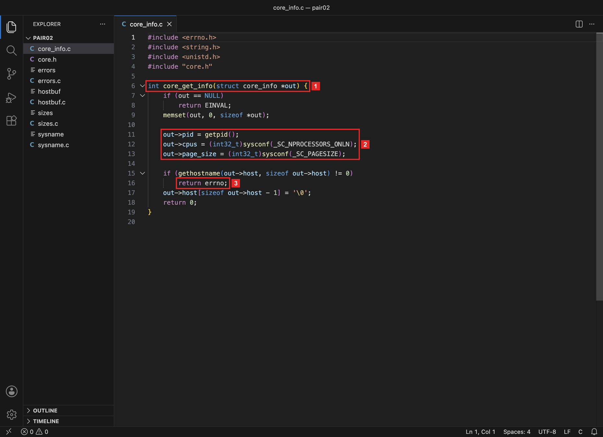
core_info.c. 1 Заголовок функции: параметр — адрес структуры. 2 Запись трёх числовых полей через ->. 3 Возврат кода ошибки системы.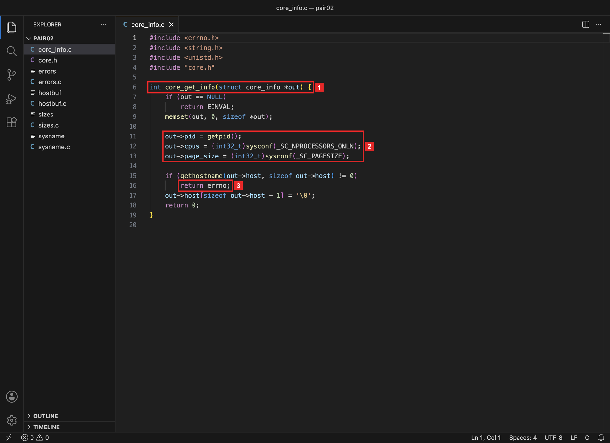
core_info.c. 1 Заголовок функции: параметр — адрес структуры. 2 Запись трёх числовых полей через ->. 3 Возврат кода ошибки системы.Что получилось.Функция ядра готова: адрес на входе, поля по адресу, код ошибки на выходе. Её нужно проверить отдельной программой.
§8Шаг 7. Проверить функцию программой
Программа show_info.c вызывает функцию так же, как будет вызывать мозг агента: объявляет структуру, передаёт её адрес, проверяет код и печатает поля. Для полей точного размера используются макросы формата из inttypes.h: PRId64 — формат для int64_t, PRId32 — для int32_t. На каждой системе они раскрываются в свой формат, например "lld" или "ld".
#include <inttypes.h> #include <stdio.h> #include "core.h" int main(void) { struct core_info info; int err = core_get_info(&info); if (err != 0) { printf("core_get_info: error %d\n", err); return 1; } printf("pid %" PRId64 "\n", info.pid); printf("cpus %" PRId32 "\n", info.cpus); printf("page_size %" PRId32 "\n", info.page_size); printf("host %s\n", info.host); printf("sizeof %zu\n", sizeof info); printf("&info %p\n", (void *)&info); return 0; }
Программа собирается из двух файлов: компилятор собирает каждый, а компоновщик соединяет вызов core_get_info в show_info.c с самой функцией из core_info.c.
cl /nologo /W4 show_info.c core_info.c && show_info.exe
clang -Wall -Wextra -o show_info show_info.c core_info.c && ./show_info
gcc -Wall -Wextra -o show_info show_info.c core_info.c && ./show_info
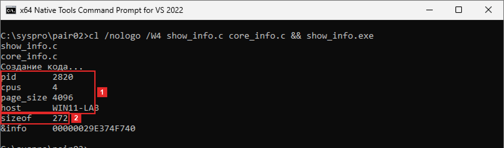
show_info.c, core_info.c, «Создание кода…»). 1 Поля: PID 2820, 4 процессора, страница 4096, имя WIN11-LAB. 2 Структура — 272 байта.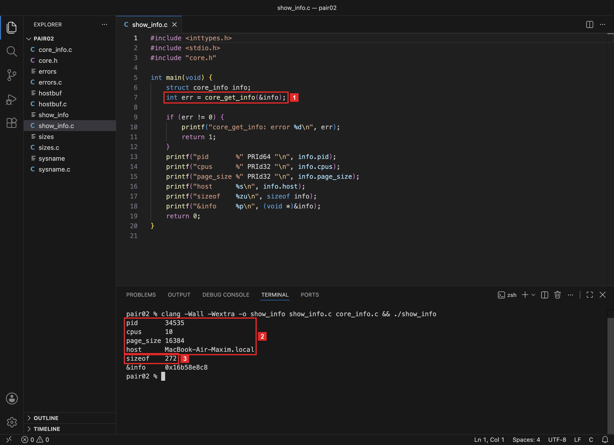
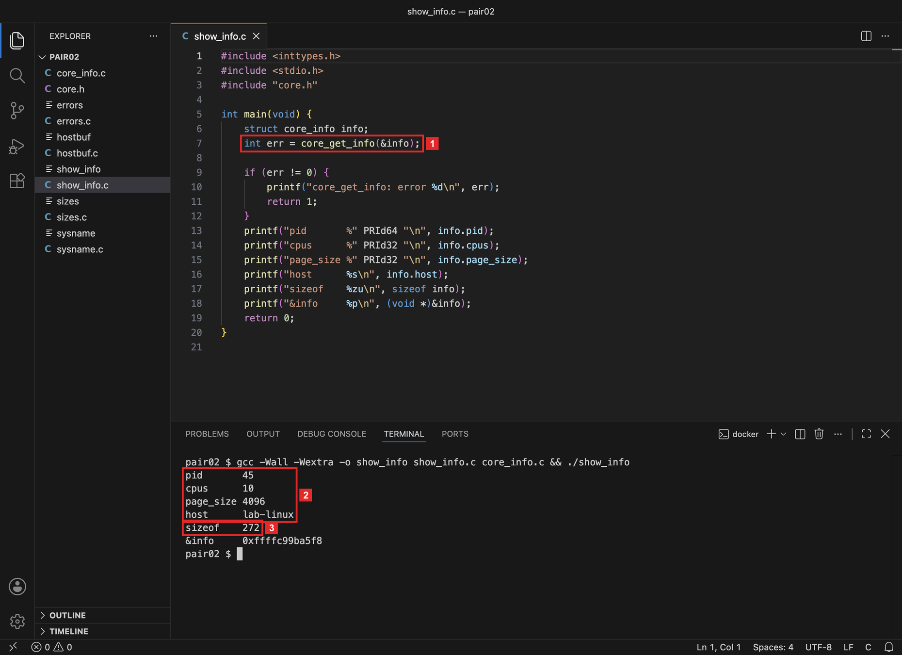
lab-linux. 3 Структура — 272 байта.Номер процесса проверяется так же, как в ЛР 1: число совпадает с тем, что показал бы Диспетчер задач, пока программа работает. Размер 2 — 272, как посчитано в шаге 5. Последняя строка — адрес структуры в памяти процесса: 16 шестнадцатеричных цифр, 8 байт.
Размер 3 — 272, как посчитано в шаге 5. Страница памяти на Mac с процессором Apple — 16384 байта, в четыре раза больше, чем в Windows и Linux на тех же процессорах ARM. Последняя строка — адрес структуры в памяти процесса; он меняется при каждом запуске.
Размер 3 — 272, как посчитано в шаге 5. Номер процесса маленький — 45: кадр снят в контейнере, где у процессов своя нумерация. На обычном компьютере с Ubuntu номер будет в тысячах, как в ЛР 1. Последняя строка — адрес структуры в памяти процесса; он меняется при каждом запуске.
Что получилось.Функция ядра работает на своей системе и отдаёт 272 байта одинаковой раскладки. Осталось проверить, что компилятор найдёт ошибку формата, если она появится.
§9Шаг 8. Найти ошибку по предупреждению
Ошибка формата в printf — частая ошибка при переносе кода между системами. Заменим в show_info.c формат номера процесса на %d, как пишут для обычного int:
printf("pid %" PRId64 "\n", info.pid);
printf("pid %d\n", info.pid);
Собираем снова, без запуска:
cl /nologo /W4 show_info.c core_info.c
clang -Wall -Wextra -o show_info show_info.c core_info.c
gcc -Wall -Wextra -o show_info show_info.c core_info.c
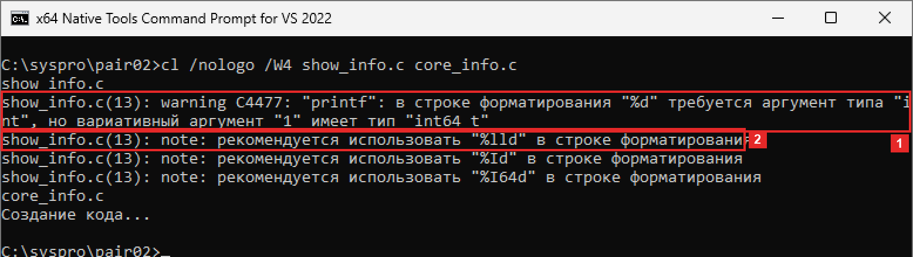
%d требует int, а аргумент имеет тип int64_t. 2 Первая из трёх подсказок: использовать %lld.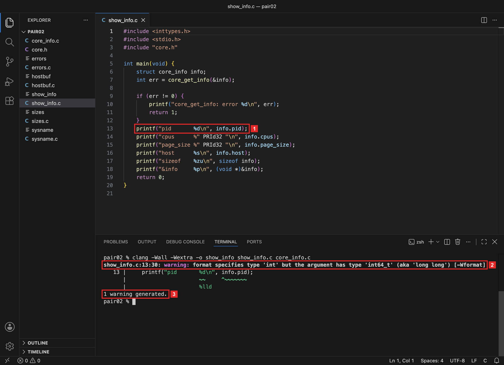
int, аргумент — int64_t (long long). 3 Итог: одно предупреждение, программа собрана.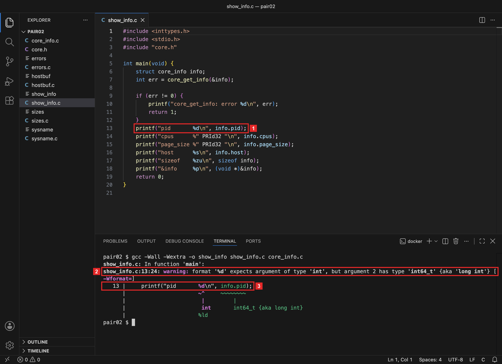
%d рассчитан на int, аргумент — int64_t (long int). 3 gcc показывает строку и отмечает в ней формат и аргумент.Сообщение 1 начинается с места ошибки: файл, номер строки в скобках. Ниже 2 компилятор предлагает форматы, подходящие для 8-байтового числа. Программа собрана: предупреждение не останавливает сборку.
Сообщение 2 начинается с места ошибки: файл, строка 13, позиция 30. Под ним clang повторяет строку, подчёркивает формат и аргумент и предлагает замену %lld. Программа собрана 3: предупреждение не останавливает сборку.
Сообщение 2 начинается с места ошибки: файл, строка 13, позиция 24. В квадратных скобках — имя проверки -Wformat=, её включил ключ -Wall. Ниже 3 gcc повторяет строку и предлагает %ld. Программа собрана: предупреждение не останавливает сборку.
Стандарт C называет несовпадение формата и типа аргумента неопределённым поведением. Что напечатает такая строка, зависит от компилятора и от того, как система передаёт параметры в функцию. На одной системе номер выйдет верным, на другой — другое число или сдвиг следующих аргументов. Поэтому предупреждения компилятора читают как ошибки. Возвращаем строку с PRId64, собираем снова — предупреждений нет.
Что получилось.Ключи /W4-Wall -Wextra находят несовпадение формата и типа. Код ядра собран без предупреждений и готов к переносу в репозиторий.
§10Шаг 9. Положить ядро в репозиторий
Файлы ядра переносятся в репозиторий sysprog-start, в папку agent/core. Демонстрационные программы шагов 1–4 остаются в pair02: они не входят в агента.
sysprog-start после шага
core_get_info, шаг 6Копируем три файла в копию репозитория в Документах, открываем её в VS Code и дописываем в таблицу agent/core/README.md по строке на файл. Сборка из папки репозитория проверяет, что все файлы на месте:
cd /d %USERPROFILE%\Documents\sysprog-start\agent\core cl /nologo /W4 show_info.c core_info.c && show_info.exe
cd ~/Documents/sysprog-start/agent/core clang -Wall -Wextra -o show_info show_info.c core_info.c && ./show_info
cd ~/Documents/sysprog-start/agent/core gcc -Wall -Wextra -o show_info show_info.c core_info.c && ./show_info
Собранная программа в репозиторий не кладётся: show_info.exe и .objфайл show_info создаётся заново из исходников на любой системе. В панели Source Control отбираем плюсом четыре файла — три исходника и README.md — и делаем коммит, как в справочнике по Git:
git add agent/core/core.h agent/core/core_info.c agent/core/show_info.c agent/core/README.md git commit -m "core: core_get_info — сведения о системе" git push
Что получилось.В репозитории первая функция ядра агента. Код написан вручную; последняя часть пары — сверить с ним объяснение помощника ИИ.
§11Запрос к помощнику ИИ
В режиме Р1 из главы 0.3 помощник генерирует объяснение, а код пишется вручную. Запрос к помощнику в VS Code:
Объясни, почему в структуре core_info поля объявлены как int64_t и int32_t, а не long и int. Структура читается из Python через ctypes на Windows, macOS и Linux.
Ответ сверяется с шагами 1 и 5 по списку:
- названо, что
longв 64-битной Windows занимает 4 байта, а в macOS и Linux — 8 (модели LLP64 и LP64); - сказано, что Python должен знать точный размер и смещение каждого поля;
- нет утверждения, что
intна этих системах бывает 8 байт: на кадре шага 1 он 4 байта на всех трёх; - если в ответе есть код на Python, типы в нём точного размера:
c_int64,c_int32.
Если ответ расходится с кадром шага 1, проверка — запуск sizes на своей системе: вывод программы показывает настоящие размеры.
§12Справка: функции и команды главы
| Что нужно | Windows | macOS и Linux |
|---|---|---|
| Номер своего процесса | GetCurrentProcessId() | getpid() |
| Число процессоров, размер страницы | GetNativeSystemInfo(&si) | sysconf(_SC_NPROCESSORS_ONLN), sysconf(_SC_PAGESIZE) |
| Имя и версия системы | RtlGetVersion | uname(&u) |
| Имя компьютера | GetComputerNameW(buf, &len) | gethostname(buf, size) |
| Строку UTF-16 в UTF-8 | WideCharToMultiByte(CP_UTF8, …) | не нужно: строки уже в UTF-8 |
| Код последней ошибки | GetLastError() | errno |
| Текст ошибки | FormatMessageW, в командной строке net helpmsg код | strerror(code), perror("…") |
| Обнулить память | ZeroMemory(p, n) | memset(p, 0, n) |
| Собрать с предупреждениями | cl /nologo /W4 a.c b.c | clang или gcc -Wall -Wextra -o prog a.c b.c |
| Запись в C | Что значит | Пример из главы |
|---|---|---|
sizeof x | размер в байтах | sizeof info — 272 |
&x | адрес переменной | core_get_info(&info) |
T *p | указатель — переменная с адресом значения типа T | struct core_info *out |
s.f и p->f | поле структуры по имени и по адресу | u.sysname, out->pid |
char buf[N] | буфер на N байт, строка в нём — до байта 0 | char host[256] |
NULL | нулевой указатель, адреса нет | if (out == NULL) |
(int32_t)x | явное приведение к типу | (int32_t)sysconf(…) |
PRId64 | формат printf для int64_t | "%" PRId64 |
§13Частые вопросы
long всегда 8 байт на 64-битной системе.long — 4 байта (кадр шага 1). Для полей, которые читают другие программы, пишут int32_t и int64_t.return.return функция отдаёт код успеха или ошибки.gethostname в Linux при маленьком буфере записала lab- без нуля. Последний байт буфера после вызова ставят в ноль вручную.errno можно прочитать в любой момент после ошибки.errors.c.§14Проверьте себя
Сколько байт занимает long в Windows, macOS и Linux и какой тип взять для поля, которое читает Python?
4 в 64-битной Windows, 8 в macOS и Linux. Для поля, которое читает другая программа, берут тип точного размера: int32_t или int64_t.
Зачем функции uname или GetNativeSystemInfo передают адрес структуры &u?
Функция должна записать поля в структуру вызывающей программы. Для этого ей нужен адрес структуры. Без & функция получила бы копию, и изменения пропали бы после возврата.
Строка "lab-linux" — сколько байт нужно под неё в буфере?
10: девять букв и завершающий ноль. strlen вернёт 9.
Функция открытия файла вернула ошибку. Что нужно сделать до вызова printf?
Сохранить GetLastError()errno в переменную: printf тоже обращается к системе и может перезаписать код.
Почему в core_get_info нет printf?
Ядро агента отдаёт данные и код ошибки тому, кто его вызвал. Печатает, записывает в журнал или отправляет в n8n мозг агента.
Почему структура core_info занимает ровно 272 байта и пропусков в ней нет?
8 + 4 + 4 + 256. Два поля по 4 байта стоят после 8-байтового pid и заполняют следующие 8 байт, поэтому буфер host начинается со смещения 16 без выравнивающих пропусков.
§15Шпаргалка по главе
sizeof xlong: 4 в Windows, 8 в macOS и Linuxint32_t, int64_t — точноstruct core_info info;core_get_info(&info);out->pid = …'\0'размер буфера — длина + 1buf[sizeof buf - 1] = '\0';GetLastError()errno — причинусохранить сразуcl /nologo /W4 a.c b.cclang -Wall -Wextra -o p a.c b.cgcc -Wall -Wextra -o p a.c b.cпредупреждения читать как ошибкиprintfagent/core в репозиторииИтог главы
Системные функции принимают адреса и возвращают коды, поэтому для работы с ними нужны четыре вещи языка C. Размеры типов проверяются оператором sizeof. У long размер разный в Windows и в macOS и Linux, поэтому поля, которые читают другие программы, объявляются типами точного размера. Структуру объявляет вызывающая программа, а функция заполняет её по адресу. Строка — байты до нуля в буфере, размер которого передаётся вместе с адресом. При маленьком буфере три системы ведут себя по-разному, поэтому последний байт ставят в ноль вручную. Неудачу показывает возвращаемое значение, причину — GetLastError или errno, и её сохраняют сразу. Из этого собрана первая функция ядра агента core_get_info. Она заполняет структуру в 272 байта с одинаковой раскладкой на трёх системах, возвращает код ошибки и ничего не печатает.
- Кадры и выводы программ: macOS 26.1 на Apple M-серии, Apple clang 17.0.0, VS Code 1.138; Linux — терминал VS Code в контейнере Debian 13 с gcc 14.4, ядро 7.0 (Docker Desktop), имя машины
lab-linux; Windows 11 24H2 ARM64 в VirtualBox, MSVC 19.44 (Build Tools 2022), сборка x64. - Модели данных LLP64 и LP64 и размер
longв Windows — Microsoft Learn, Data Type Ranges. GetNativeSystemInfo,SYSTEM_INFOи значенияwProcessorArchitecture— Microsoft Learn;GetComputerNameWиERROR_BUFFER_OVERFLOW— Microsoft Learn.gethostname: обрезка имени и отсутствие гарантии нуля — POSIX.1-2024; ошибкаENAMETOOLONGв glibc — man 2 gethostname.unameиstruct utsname— POSIX.1-2024;errnoи его значение в потоке — POSIX.1-2024.- Макрос
smallвrpcndr.h— ошибка сборки на кадре Windows (C2628, C2143) и заголовок Windows SDK.